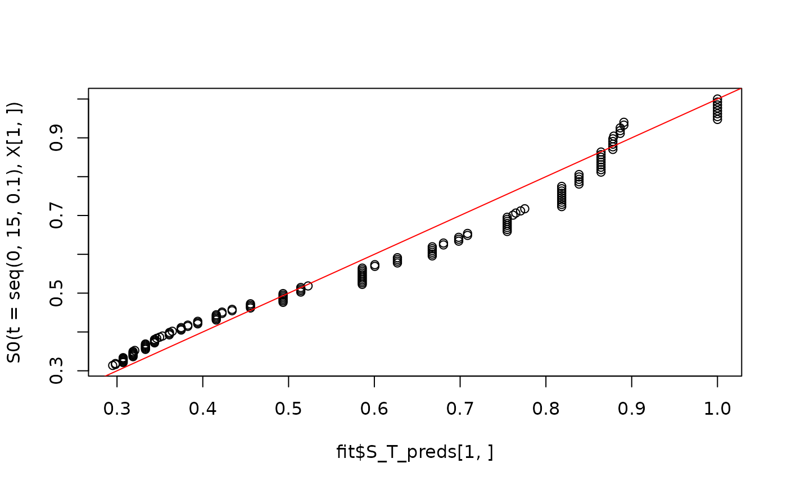

Estimate a conditional survival function using global survival stacking
Source:R/stackG.R
stackG.RdEstimate a conditional survival function using global survival stacking
Usage
stackG(
time,
event = rep(1, length(time)),
entry = NULL,
X,
newX = NULL,
newtimes = NULL,
direction = "prospective",
time_grid_fit = NULL,
bin_size = NULL,
time_basis,
time_grid_approx = sort(unique(time)),
surv_form = "PI",
learner = "SuperLearner",
SL_control = list(SL.library = c("SL.mean"), V = 10, method = "method.NNLS", stratifyCV
= FALSE),
tau = NULL
)Arguments
- time
n x 1numeric vector of observed follow-up times If there is censoring, these are the minimum of the event and censoring times.- event
n x 1numeric vector of status indicators of whether an event was observed. Defaults to a vector of 1s, i.e. no censoring.- entry
Study entry variable, if applicable. Defaults to
NULL, indicating that there is no truncation.- X
n x pdata.frame of observed covariate values on which to train the estimator.- newX
m x pdata.frame of new observed covariate values at which to obtainmpredictions for the estimated algorithm. Must have the same names and structure asX.- newtimes
k x 1numeric vector of times at which to obtainkpredicted conditional survivals.- direction
Whether the data come from a prospective or retrospective study. This determines whether the data are treated as subject to left truncation and right censoring (
"prospective") or right truncation alone ("retrospective").- time_grid_fit
Named list of numeric vectors of times of times on which to discretize for estimation of cumulative probability functions. This is an alternative to
bin_sizeand allows for specially tailored time grids rather than simply using a quantile bin size. The list consists of vectors namedF_Y_1_grid,F_Y_0_grid,G_W_1_grid, andG_W_0_grid. These denote, respectively, the grids used to estimate the conditional CDF of thetimevariable among uncensored and censored observations, and the grids used to estimate the conditional distribution of theentryvariable among uncensored and censored observations.- bin_size
Size of time bin on which to discretize for estimation of cumulative probability functions. Can be a number between 0 and 1, indicating the size of quantile grid (e.g.
0.1estimates the cumulative probability functions on a grid based on deciles of observedtimes). IfNULL, creates a grid of all observedtimes.- time_basis
How to treat time for training the binary classifier. Options are
"continuous"and"dummy", meaning an indicator variable is included for each time in the time grid.- time_grid_approx
Numeric vector of times at which to approximate product integral or cumulative hazard interval. Defaults to
timesargument.- surv_form
Mapping from hazard estimate to survival estimate. Can be either
"PI"(product integral mapping) or"exp"(exponentiated cumulative hazard estimate).- learner
Which binary regression algorithm to use. Currently, only
SuperLearneris supported, but more learners will be added. See below for algorithm-specific arguments.- SL_control
Named list of parameters controlling the Super Learner fitting process. These parameters are passed directly to the
SuperLearnerfunction. Parameters includeSL.library(library of algorithms to include in the binary classification Super Learner),V(Number of cross validation folds on which to train the Super Learner classifier, defaults to 10),method(Method for estimating coefficients for the Super Learner, defaults to"method.NNLS"),stratifyCV(logical indicating whether to stratify by outcome inSuperLearner's cross-validation scheme), andobsWeights(observation weights, passed directly to prediction algorithms bySuperLearner).- tau
The maximum time of interest in a study, used for retrospective conditional survival estimation. Rather than dealing with right truncation separately than left truncation, it is simpler to estimate the survival function of
tau - time. Defaults toNULL, in which case the maximum study entry time is chosen as the reference point.
Value
A named list of class stackG, with the following components:
- S_T_preds
An
m x kmatrix of estimated event time survival probabilities at themcovariate vector values andktimes provided by the user innewXandnewtimes, respectively.- S_C_preds
An
m x kmatrix of estimated censoring time survival probabilities at themcovariate vector values andktimes provided by the user innewXandnewtimes, respectively.- Lambda_T_preds
An
m x kmatrix of estimated event time cumulative hazard function values at themcovariate vector values andktimes provided by the user innewXandnewtimes, respectively.- Lambda_C_preds
An
m x kmatrix of estimated censoring time cumulative hazard function values at themcovariate vector values andktimes provided by the user innewXandnewtimes, respectively.- time_grid_approx
The approximation grid for the product integral or cumulative hazard integral, (user-specified).
- direction
Whether the data come from a prospective or retrospective study (user-specified).
- tau
The maximum time of interest in a study, used for retrospective conditional survival estimation (user-specified).
- surv_form
Exponential or product-integral form (user-specified).
- time_basis
Whether time is included in the regression as
continuousordummy(user-specified).- SL_control
Named list of parameters controlling the Super Learner fitting process (user-specified).
- fits
A named list of fitted regression objects corresponding to the constituent regressions needed for global survival stacking. Includes
P_Delta(probability of event given covariates),F_Y_1(conditional cdf of follow-up times given covariates among uncensored),F_Y_0(conditional cdf of follow-up times given covariates among censored),G_W_1(conditional distribution of entry times given covariates and follow-up time among uncensored),G_W_0(conditional distribution of entry times given covariates and follow-up time among uncensored). Each of these objects includes estimated coefficients from theSuperLearnerfit, as well as the time grid used to create the stacked dataset (where applicable).
References
Wolock C.J., Gilbert P.B., Simon N., and Carone, M. (2024). "A framework for leveraging machine learning tools to estimate personalized survival curves."
Examples
# This is a small simulation example
set.seed(123)
n <- 500
X <- data.frame(X1 = rnorm(n), X2 = rbinom(n, size = 1, prob = 0.5))
S0 <- function(t, x){
pexp(t, rate = exp(-2 + x[,1] - x[,2] + .5 * x[,1] * x[,2]), lower.tail = FALSE)
}
T <- rexp(n, rate = exp(-2 + X[,1] - X[,2] + .5 * X[,1] * X[,2]))
G0 <- function(t, x) {
as.numeric(t < 15) *.9*pexp(t,
rate = exp(-2 -.5*x[,1]-.25*x[,2]+.5*x[,1]*x[,2]),
lower.tail=FALSE)
}
C <- rexp(n, exp(-2 -.5 * X[,1] - .25 * X[,2] + .5 * X[,1] * X[,2]))
C[C > 15] <- 15
entry <- runif(n, 0, 15)
time <- pmin(T, C)
event <- as.numeric(T <= C)
sampled <- which(time >= entry)
X <- X[sampled,]
time <- time[sampled]
event <- event[sampled]
entry <- entry[sampled]
# Note that this a very small Super Learner library, for computational purposes.
SL.library <- c("SL.mean", "SL.glm")
fit <- stackG(time = time,
event = event,
entry = entry,
X = X,
newX = X,
newtimes = seq(0, 15, .1),
direction = "prospective",
bin_size = 0.1,
time_basis = "continuous",
time_grid_approx = sort(unique(time)),
surv_form = "exp",
learner = "SuperLearner",
SL_control = list(SL.library = SL.library,
V = 5))
plot(fit$S_T_preds[1,], S0(t = seq(0, 15, .1), X[1,]))
abline(0,1,col='red')
